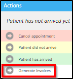
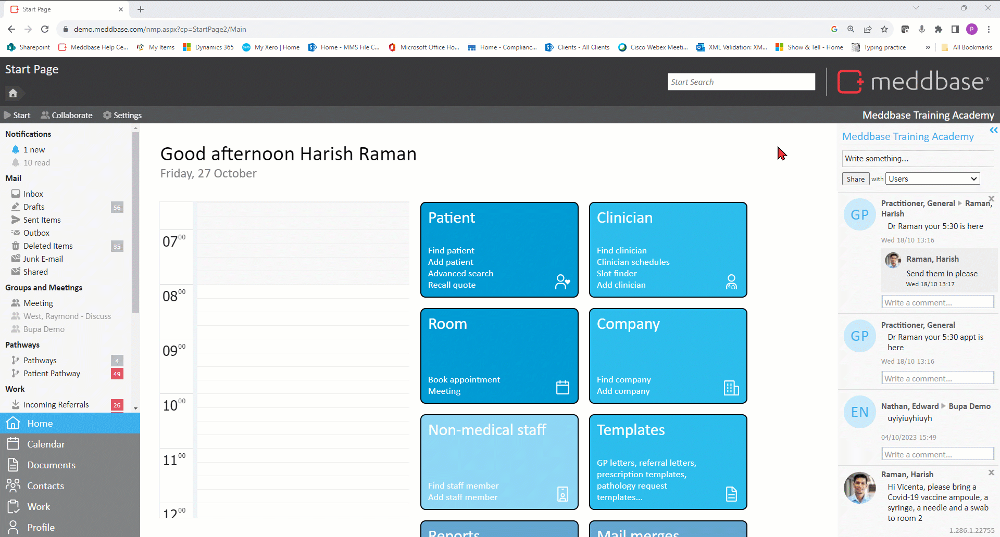
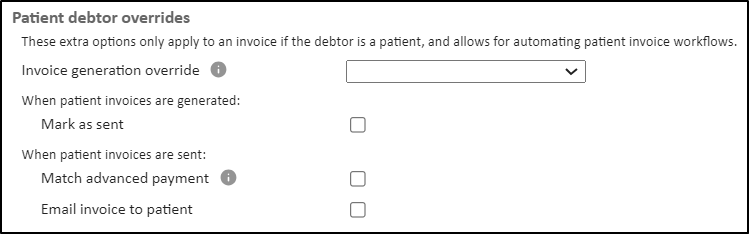
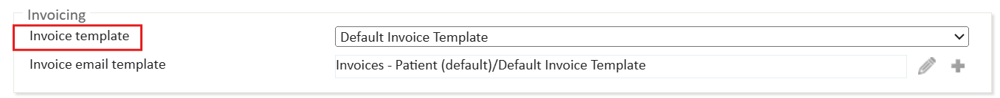

Meddbase allows invoice generation for all debtors manually or automatically.
When the debtor of an invoice is a patient, a separate invoice generation protocol is possible and parts of the invoicing workflow can be automated as well.
This article will guide you through invoice generation options and new configuration options for patient debtor invoices. This article covers the following topics:
Meddbase allows applying an invoice generation option to all invoices and determine if invoices created as part of an appointment should be automatically generated at various parts of the appointment process, or generated manually.
To configure invoice generation:

*The Discharge label can be changed as needed (e.g. End Appointment etc). Please contact the Client Account Management on accountmanagement@meddbase.com for more details on amending Clinical Forms.

Meddbase allows a separate invoice generation protocol to be followed when the debtor of an invoice is a patient.
To configure invoice generation:
Make sure you click Save to apply any of the described settings.

This dropdown contains the same options as the existing Invoice generation dropdown, but applies specifically for invoices where the debtor is a patient.
The dropdown also contains an "empty"/"blank" option (default selected option). When this option is selected, patient debtor invoices just come from the original Invoice generation dropdown.
This option is disabled by default. When enabled, any invoice that is created where the debtor is a patient will automatically be marked as sent. A sent invoice cannot be deleted or modified later.
This option is disabled by default. When enabled, any invoice that is marked as 'sent' where the debtor is a patient will automatically attempt to match a 'perfect' advanced payment.
This means is that Meddbase will search all advanced paymentsf made either:
Meddbase will search for a payment that is completely unmatched and has an amount exactly equal to the balance of the invoice. If a payment that meets this criteria is found, then it will be identified as a 'perfectly matching' payment made specifically for covering this invoice, and so it is automatically matched to the invoice and clears the balance.
This option is disabled by default. When enabled, any invoice that is marked as 'sent' where the debtor is a patient will automatically be sent as an email attachment to the patient.
The invoice will be attached as a PDF attachment to the email using the invoice template selected in the Invoice template option within the Invoicing section found on the Admin > Configuration > Accountancy page.

The email will also contain an Online Payment link for the invoice if:
For more information on Online Payments, see Opayo/Elavon Integration Guide.